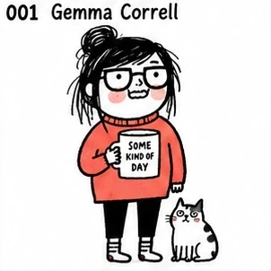
松散黑线、怪萌人物、少量点色、白底、日常吐槽与尴尬幽默；人物轮廓优先于细节堆砌，脸型、头身比例与手脚形状要形成清楚而独立的视觉语言；表情偏冷脸、尴尬或突然夸张，姿态要有明确喜剧节奏，避免统一的可爱微笑。
输入 001–278、风格名或原参考名筛选；图片为本地预览，点击可查看原图。

松散黑线、怪萌人物、少量点色、白底、日常吐槽与尴尬幽默；人物轮廓优先于细节堆砌，脸型、头身比例与手脚形状要形成清楚而独立的视觉语言；表情偏冷脸、尴尬或突然夸张，姿态要有明确喜剧节奏，避免统一的可爱微笑。

极简线描、连续线、概念隐喻、人与空间一体化、智性幽默。

极细钢笔线、小人物大空间、大量留白、温柔法式都市幽默。
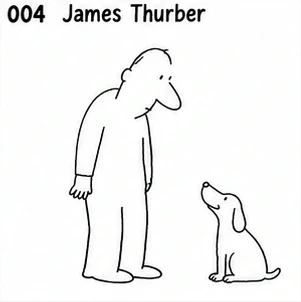
故意笨拙的极简线条、比例失衡、几笔成形、冷幽默。
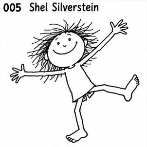
极简黑线、儿童式自由造型、荒诞动作、低细节。

黑白钢笔、密集排线、维多利亚气息、古怪冷峻黑色幽默。

狂躁钢笔、断裂墨线、细长人体、尖锐夸张、动态极强。
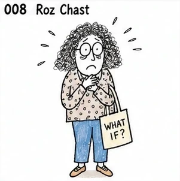
神经质手绘、歪斜线条、手写文字、都市焦虑式喜剧；人物轮廓优先于细节堆砌，脸型、头身比例与手脚形状要形成清楚而独立的视觉语言；表情与肢体动作要服从该风格的人格机制，避免回落为统一的标准Q版表情。
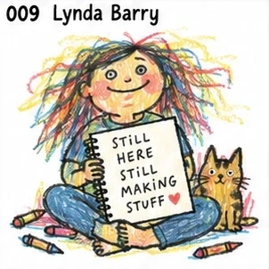
粗糙手帐、Zine 感、手写字、原始情绪、反精致；人物轮廓优先于细节堆砌，脸型、头身比例与手脚形状要形成清楚而独立的视觉语言；保留纸纹、颗粒、套印或手工媒介的不完美，强化独立出版物的触感。

极小几何人物、极简场景、文学/科技梗、冷面幽默；脸部与服装主动做减法，依靠清楚轮廓、眼口和少量关键形状建立人物辨识度；表情偏冷脸、尴尬或突然夸张，姿态要有明确喜剧节奏，避免统一的可爱微笑。
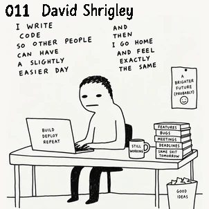
故意画坏、粗糙黑线、幼稚造型、荒诞文字、强 meme 感；人物轮廓优先于细节堆砌，脸型、头身比例与手脚形状要形成清楚而独立的视觉语言；表情偏冷脸、尴尬或突然夸张，姿态要有明确喜剧节奏，避免统一的可爱微笑。

极简概念设计、物体重解释、视觉双关、脑洞型构图；脸部与服装主动做减法，依靠清楚轮廓、眼口和少量关键形状建立人物辨识度；表情与肢体动作要服从该风格的人格机制，避免回落为统一的标准Q版表情。
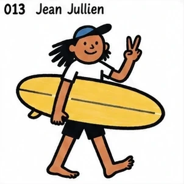
粗黑轮廓、扁平色块、现代人物、互联网生活讽刺；以醒目外轮廓和大形组织人物，五官少而有力，动作通过肩胯与手脚方向直接传达；表情偏冷脸、尴尬或突然夸张，姿态要有明确喜剧节奏，避免统一的可爱微笑。

随手钢笔、手写字、恶趣味、英式反鸡汤幽默；保留明显手绘笔压、停顿与轻微不齐整感，让轮廓产生真实纸上绘制的节奏；表情偏冷脸、尴尬或突然夸张，姿态要有明确喜剧节奏，避免统一的可爱微笑。

极简人物线稿、人与关系、柔和色块、生活型社论；脸部与服装主动做减法，依靠清楚轮廓、眼口和少量关键形状建立人物辨识度；配色控制在柔和低刺激色域，用少量点色区分层次，背景保持轻和干净。
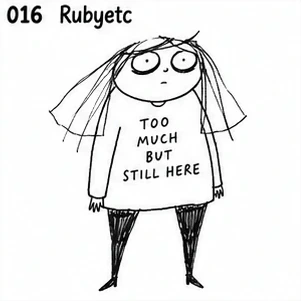
粗糙黑线、极简人体、心理情绪、自嘲式互联网漫画；脸部与服装主动做减法，依靠清楚轮廓、眼口和少量关键形状建立人物辨识度；保留纸纹、颗粒、套印或手工媒介的不完美，强化独立出版物的触感。
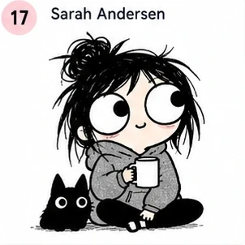
黑白简线、圆眼反应表情、松散黑发、日常衣着；人物常与小动物或生活物件并置，依靠简单轮廓和大面积留白塑造轻松的生活漫画感。
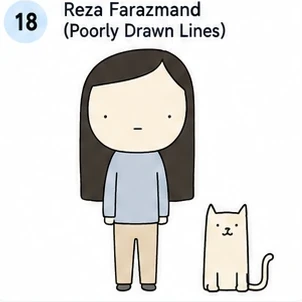
极简圆头人物、面无表情、简单动物、灰蓝与米色小色块；人物和动物以干净轮廓置于白底中，靠冷淡姿态和微小关系制造荒诞幽默。
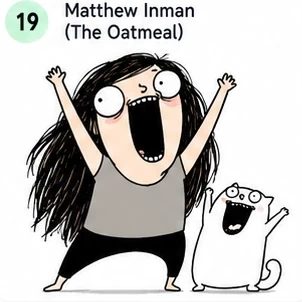
粗黑线、夸张圆眼、张大嘴、头发和四肢大幅甩动；人物常与动物同框，以强烈动作、巨大表情和少量灰黑色块形成爆发式网络漫画效果。
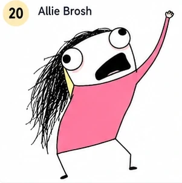
粗糙鼠绘感、黑色乱发、极端大眼大嘴、粉色大色块、单人失控动作；保留低保真数字涂画的不规整轮廓和直接粗粝的互联网幽默。
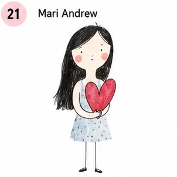
极简女性人物、细黑线、细长四肢、柔和水彩点染；以红色心形等单一物件承载生活情绪，画面保持白底、留白和轻微纸张质感。
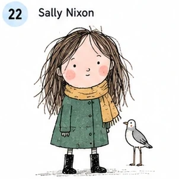
日常女性人物、蓬松手绘线稿、低饱和外套与围巾、旁边的小鸟；姿态自然站立，服装和动物用清楚色块区分，整体保留生活速写的轻松感。

黑色简线、黑色长发女性、坐姿、白上衣与蓝色牛仔裤；以少量暖色腮红和红色鞋带点亮画面，背景保持干净，气质亲密而松弛。
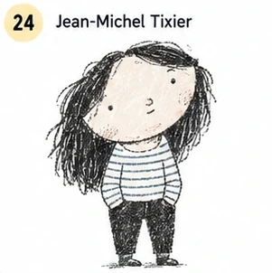
夸张大头、松散黑色短线、冷面人物、横条纹上衣、灰黑与浅色块；人物比例故意不协调，依靠简化脸部和粗略纹理形成时尚而疏离的幽默感。

单格漫画、极简黑线、细长人物与动物并置、荒诞社会情境；人物和动物以克制的姿态和少量灰绿色块呈现一本正经的反逻辑幽默。

密集小动物和小人物、粗黑线、夸张鼻子与张嘴大笑、四肢向外伸展；画面充满无字肢体喜剧和拥挤的动作信息。

黑色密排线、粗重轮廓、坐姿人物、夸张而不修饰的人体比例；皮肤、头发和衣物依靠密集交叉排线塑造，带有地下漫画的粗粝与怪诞。
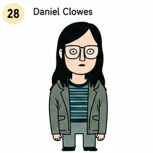
黑色齐肩直发、方形眼镜、条纹上衣与绿色外套、冷静平涂色块；人物正面站立、表情疏离，画面具有复古美式成人漫画的克制感。

几何精密线条、孤立小人物、公交站牌与城市方块、信息图式留白；人物和环境由规整矩形与细线组成，色彩克制，叙事像一张安静的城市图表。
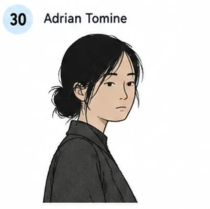
清晰细线、年轻亚洲女性半身像、深色外套、低饱和肤色与黑发；人物侧身回望，表情安静克制，背景留白，呈现都市观察和轻微疏离。

黑白高对比、粗黑剪影、盘坐女性、简化五官、大片纯黑服装；人物姿态直接而静止，依靠白色脸部和黑色轮廓形成克制的回忆录漫画感。

松散法式墨线、蓬乱卷发、大眼女性、黑猫、随意坐姿；线条保留手绘停顿和轻微不齐整，配合少量暖色块，形成即兴、俏皮而略带怪诞的画面。

极简报纸漫画线、圆头小人物、低动作高人格、细微表情。
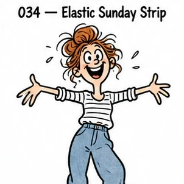
松散弹性墨线、夸张儿童表情、强肢体动作、少量透明水彩；保留明显手绘笔压、停顿与轻微不齐整感，让轮廓产生真实纸上绘制的节奏；上色保留透明叠染、柔软边缘和纸纹，允许轻微颜色不均与留白。
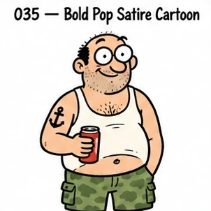
粗黑轮廓、圆凸大眼、扁平人物、极少阴影、成人讽刺；以醒目外轮廓和大形组织人物，五官少而有力，动作通过肩胯与手脚方向直接传达；配色使用少量高纯度撞色和平涂，让人物剪影和服装保持强图形对比。
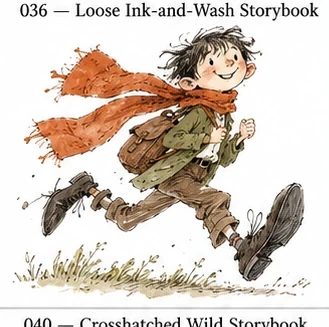
抖动墨线、松散水彩、四肢夸张、动作极灵、快速速写感。

北欧墨线、细密但轻盈、奇异人物、温柔孤独、大留白。

拟人动物社会、职业角色、圆润轮廓、丰富生活动作。
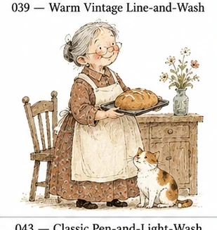
古典细线、水彩旧书感、安静角色、温暖生活气息。
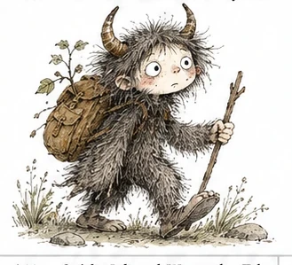
细线排线、怪物造型、童话荒诞、毛茸茸纹理。
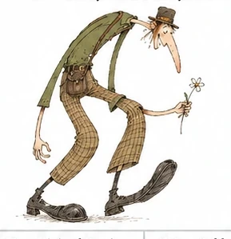
极端比例、弯曲结构、怪生物、流动线条、疯狂想象。

精细水彩、自然主义动物、古典绘本、柔和纸张感。

钢笔速写、淡水彩、古典角色、优雅而轻松。
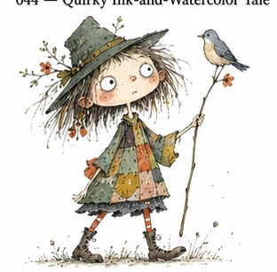
怪趣人物、墨线、水彩、不规则比例、现代童话；保留明显手绘笔压、停顿与轻微不齐整感，让轮廓产生真实纸上绘制的节奏；上色保留透明叠染、柔软边缘和纸纹，允许轻微颜色不均与留白。
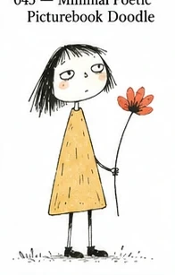
极简人物、手写感、松散涂色、诗意荒诞；脸部与服装主动做减法，依靠清楚轮廓、眼口和少量关键形状建立人物辨识度；表情偏冷脸、尴尬或突然夸张，姿态要有明确喜剧节奏，避免统一的可爱微笑。

几何块面、极简轮廓、高饱和色、强剪影；脸部与服装主动做减法，依靠清楚轮廓、眼口和少量关键形状建立人物辨识度；配色使用少量高纯度撞色和平涂，让人物剪影和服装保持强图形对比。
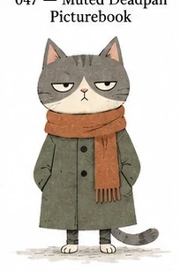
极简动物、半闭眼、低饱和、Deadpan 冷幽默；脸部与服装主动做减法，依靠清楚轮廓、眼口和少量关键形状建立人物辨识度；配色控制在柔和低刺激色域，用少量点色区分层次，背景保持轻和干净。

民俗线描、复古配色、植物纹样、奇异群像；人物轮廓优先于细节堆砌，脸型、头身比例与手脚形状要形成清楚而独立的视觉语言；表情与肢体动作要服从该风格的人格机制，避免回落为统一的标准Q版表情。
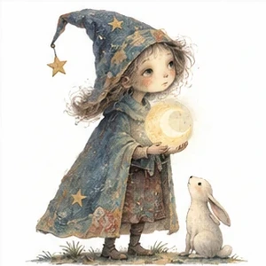
柔和手绘笔触、轻微超现实人物、低饱和梦境配色、安静叙事气质；人物轮廓简洁清楚，比例略诗意变形，表情克制偏沉静，留出白底与空间感，避免过于指向单一作者的独特怪脸机制。
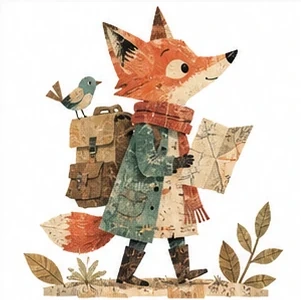
分层拼贴质感、复古纸张肌理、手工剪贴与印刷颗粒感并存；人物由大形与贴纸般色块构成，造型怪趣但易读，配色温暖克制，强调材料感与旧书气息，避免复现某个固定童书角色。
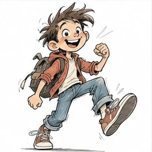
速写式手绘线条、夸张但亲切的人物表演、清楚外轮廓与鲜明性格；脸部结构简化，眉眼嘴主导情绪，动作有动画草图般弹性和节奏，适合做高人格角色，避免过度逼近具体作者角色设计。
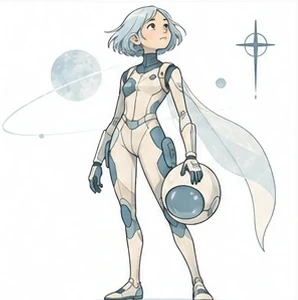
干净细线、轻科技感人物、简洁未来服装与梦境般留白；线条清晰克制，配色偏浅淡蓝灰或柔和中性色，人物修长、姿态安静，强调现代科幻插图气质而非某个具体世界观。
欧洲清线漫画语言、整洁闭合轮廓、平涂配色、人物可读性极高；造型简洁、动作明确，脸部结构控制在少量特征之内，带轻冒险叙事感，避免直接滑向某个经典固定角色。
几何化清线人物、现代主义图形秩序、简洁建筑感服装与姿态；以圆方弧线组织角色，平涂色块干净，表情直接而克制，整体更偏欧洲平面设计人物感，避免过强的单一作者指纹。

卡通嘴眼、杂志涂鸦覆盖、Pop 色彩、朋克恶搞；人物轮廓优先于细节堆砌，脸型、头身比例与手脚形状要形成清楚而独立的视觉语言；配色使用少量高纯度撞色和平涂，让人物剪影和服装保持强图形对比。
几何人物、复古城市、高饱和平涂、70s–80s 商业卡通感；人物以圆、方、弧线等大形构成，五官图标化，比例强调图形辨识而非写实解剖；配色使用少量高纯度撞色和平涂，让人物剪影和服装保持强图形对比。

极简几何、大块高饱和色、女性时尚人物；脸部与服装主动做减法，依靠清楚轮廓、眼口和少量关键形状建立人物辨识度；配色使用少量高纯度撞色和平涂，让人物剪影和服装保持强图形对比。

极简剪影、正负形、高对比色、强视觉切割；脸部与服装主动做减法，依靠清楚轮廓、眼口和少量关键形状建立人物辨识度；主要依靠黑白关系和大面积留白塑形，表情集中在眼神、眉形与嘴形变化。
负空间、双重图像、极少颜色、视觉双关；人物轮廓优先于细节堆砌，脸型、头身比例与手脚形状要形成清楚而独立的视觉语言；表情与肢体动作要服从该风格的人格机制，避免回落为统一的标准Q版表情。
几何童话、现代主义色块、夸张比例、明快配色。

极端几何化动物与人物、Flat Shape、装饰性强。

剪纸般粗粝几何形、强符号、极少元素。

拼贴、玩具式图形、几何人物、现代主义幽默。

复古社论、强轮廓、波普色彩、海报化人物。
粗线、复古广告、怪趣人物、Push Pin 气质。
复古商业插画、装饰线条、怪人物、印刷感。
剪纸色块、自由人体、极简轮廓、大面积纯色。
单线脸、不断笔、极少细节、优雅诗性。

连续线、抽象人体、几何变形、符号化。
粗黑连续轮廓、动态小人、高动作、街头图腾。

原始涂鸦、皇冠与符号、文字碎片、爆裂能量。
黑墨速写、朋克线稿、文字并置、粗粝社论；保留明显手绘笔压、停顿与轻微不齐整感，让轮廓产生真实纸上绘制的节奏；表情与肢体动作要服从该风格的人格机制，避免回落为统一的标准Q版表情。

扭曲五官、怪表情、古典人物与漫画混合；人物轮廓优先于细节堆砌，脸型、头身比例与手脚形状要形成清楚而独立的视觉语言；表情与肢体动作要服从该风格的人格机制，避免回落为统一的标准Q版表情。
海报式人物、简化轮廓、平面色块、都市生活。

断裂敏感线条、细瘦人体、扭曲姿态、强情绪。

Art Brut、粗糙线、人形符号、儿童式反精致。

细线几何、童真符号、诗意色块、抽象人物。

生物符号、原始线条、红蓝黄点色、自由空间。
单线人物、流畅连续线、极简动态。

电影感极简色块、颗粒、强光影、远近层次；脸部与服装主动做减法，依靠清楚轮廓、眼口和少量关键形状建立人物辨识度；保留纸纹、颗粒、套印或手工媒介的不完美，强化独立出版物的触感。
复古丝网印刷、厚重几何色层、旧书颗粒；人物以圆、方、弧线等大形构成，五官图标化，比例强调图形辨识而非写实解剖；保留纸纹、颗粒、套印或手工媒介的不完美，强化独立出版物的触感。

流动墨线、东方笔意、强动作、现代 Editorial；保留明显手绘笔压、停顿与轻微不齐整感，让轮廓产生真实纸上绘制的节奏；线条带书写性与留白意识，衣褶、发丝和姿势顺势流动，东方感来自形与节奏。

安静平面人物、低饱和、留白、日系现代社论；人物轮廓优先于细节堆砌，脸型、头身比例与手脚形状要形成清楚而独立的视觉语言；配色控制在柔和低刺激色域，用少量点色区分层次，背景保持轻和干净。

极简黑线、时尚人物、无阴影、大白底；脸部与服装主动做减法，依靠清楚轮廓、眼口和少量关键形状建立人物辨识度；人物姿态松弛自然，服装靠清楚剪影体现时尚感，避免模板化甜美脸。
黑白线稿、极简脸、无表情、清冷日常；脸部与服装主动做减法，依靠清楚轮廓、眼口和少量关键形状建立人物辨识度；主要依靠黑白关系和大面积留白塑形，表情集中在眼神、眉形与嘴形变化。
昭和商业插画、圆润人物、明快复古色。
极轻透明水彩、柔和人物、湿边晕染、大量白纸。
昭和家庭漫画、简洁线条、日常观察。
朴拙漫画线、民俗怪谈、妖怪造型、黑白纹理。

圆润漫画轮廓、清楚表演、大眼、强动作可读性。

大头冷脸、叛逆眼神、极少背景、怪可爱；人物轮廓优先于细节堆砌，脸型、头身比例与手脚形状要形成清楚而独立的视觉语言；表情偏冷脸、尴尬或突然夸张，姿态要有明确喜剧节奏，避免统一的可爱微笑。

清线都市少女、80s 时尚、大块留白、Pop 色；人物轮廓优先于细节堆砌，脸型、头身比例与手脚形状要形成清楚而独立的视觉语言；配色使用少量高纯度撞色和平涂，让人物剪影和服装保持强图形对比。

精密钢笔、奇异动植物、古典怪萌、细节密集；保留明显手绘笔压、停顿与轻微不齐整感，让轮廓产生真实纸上绘制的节奏；表情与肢体动作要服从该风格的人格机制，避免回落为统一的标准Q版表情。
女孩穿搭速写、手绘服装、Instagram 日记感；保留明显手绘笔压、停顿与轻微不齐整感，让轮廓产生真实纸上绘制的节奏；人物姿态松弛自然，服装靠清楚剪影体现时尚感，避免模板化甜美脸。

脱力人物、松散线条、生活吐槽；人物轮廓优先于细节堆砌，脸型、头身比例与手脚形状要形成清楚而独立的视觉语言；表情偏冷脸、尴尬或突然夸张，姿态要有明确喜剧节奏，避免统一的可爱微笑。
ゆるシュール、极简人物、反逻辑日常；脸部与服装主动做减法，依靠清楚轮廓、眼口和少量关键形状建立人物辨识度；表情与肢体动作要服从该风格的人格机制，避免回落为统一的标准Q版表情。
手帐式小人物、小物罗列、文字注记、生活记录；人物轮廓优先于细节堆砌，脸型、头身比例与手脚形状要形成清楚而独立的视觉语言；表情与肢体动作要服从该风格的人格机制，避免回落为统一的标准Q版表情。

可爱 Essay Manga、生活与职场小剧场；人物轮廓优先于细节堆砌，脸型、头身比例与手脚形状要形成清楚而独立的视觉语言；表情与肢体动作要服从该风格的人格机制，避免回落为统一的标准Q版表情。

粗糙搞笑漫画、强 reaction、夸张情绪；人物轮廓优先于细节堆砌，脸型、头身比例与手脚形状要形成清楚而独立的视觉语言；表情偏冷脸、尴尬或突然夸张，姿态要有明确喜剧节奏，避免统一的可爱微笑。

清秀线稿、年轻女性、轻宅生活感；人物轮廓优先于细节堆砌，脸型、头身比例与手脚形状要形成清楚而独立的视觉语言；人物姿态松弛自然，服装靠清楚剪影体现时尚感，避免模板化甜美脸。

女生日常博客漫画、简单可亲、生活感；人物轮廓优先于细节堆砌，脸型、头身比例与手脚形状要形成清楚而独立的视觉语言；人物姿态松弛自然，服装靠清楚剪影体现时尚感，避免模板化甜美脸。

荒诞短漫画、冷笑话、极简小人物；脸部与服装主动做减法，依靠清楚轮廓、眼口和少量关键形状建立人物辨识度；表情偏冷脸、尴尬或突然夸张，姿态要有明确喜剧节奏，避免统一的可爱微笑。
温暖线条、轻怪角色、小众生活气质；人物轮廓优先于细节堆砌，脸型、头身比例与手脚形状要形成清楚而独立的视觉语言；表情与肢体动作要服从该风格的人格机制，避免回落为统一的标准Q版表情。

家庭 Essay、快速线稿、日常观察；人物轮廓优先于细节堆砌，脸型、头身比例与手脚形状要形成清楚而独立的视觉语言；表情与肢体动作要服从该风格的人格机制，避免回落为统一的标准Q版表情。

极简古怪人物、图形化、短动画式节奏；脸部与服装主动做减法，依靠清楚轮廓、眼口和少量关键形状建立人物辨识度；表情与肢体动作要服从该风格的人格机制，避免回落为统一的标准Q版表情。

极少线条、纤细女孩、优雅留白；线条轻细并保留呼吸感，人物比例偏修长，眉眼与嘴角的小变化承担主要表情；人物姿态松弛自然，服装靠清楚剪影体现时尚感，避免模板化甜美脸。
纤细人物线稿、女性情绪、长线条发丝；线条轻细并保留呼吸感，人物比例偏修长，眉眼与嘴角的小变化承担主要表情；人物姿态松弛自然，服装靠清楚剪影体现时尚感，避免模板化甜美脸。

简化人物、Pop Culture、年轻轻时尚；脸部与服装主动做减法，依靠清楚轮廓、眼口和少量关键形状建立人物辨识度；配色使用少量高纯度撞色和平涂，让人物剪影和服装保持强图形对比。
现代女性线稿、编辑插画、清爽人物；人物轮廓优先于细节堆砌，脸型、头身比例与手脚形状要形成清楚而独立的视觉语言；人物姿态松弛自然，服装靠清楚剪影体现时尚感，避免模板化甜美脸。

细线 + 淡水彩、生活方式、日系杂志感；线条轻细并保留呼吸感，人物比例偏修长，眉眼与嘴角的小变化承担主要表情；上色保留透明叠染、柔软边缘和纸纹，允许轻微颜色不均与留白。
极简女生日常、细线、低干扰构图；脸部与服装主动做减法，依靠清楚轮廓、眼口和少量关键形状建立人物辨识度；人物姿态松弛自然，服装靠清楚剪影体现时尚感，避免模板化甜美脸。

简线人物、透明水彩、干净女性杂志感；人物轮廓优先于细节堆砌，脸型、头身比例与手脚形状要形成清楚而独立的视觉语言；上色保留透明叠染、柔软边缘和纸纹，允许轻微颜色不均与留白。
彩色马克笔、奇想小物、轻童话人物；以醒目外轮廓和大形组织人物，五官少而有力，动作通过肩胯与手脚方向直接传达；表情与肢体动作要服从该风格的人格机制，避免回落为统一的标准Q版表情。

女孩、奇怪姿态、广告 Pop、松弛幽默；人物轮廓优先于细节堆砌，脸型、头身比例与手脚形状要形成清楚而独立的视觉语言；配色使用少量高纯度撞色和平涂，让人物剪影和服装保持强图形对比。

青春情绪、透明色、MV 感、线条流动；人物轮廓优先于细节堆砌，脸型、头身比例与手脚形状要形成清楚而独立的视觉语言；上色保留透明叠染、柔软边缘和纸纹，允许轻微颜色不均与留白。
温暖人物、轻线稿、生活杂志氛围；人物轮廓优先于细节堆砌，脸型、头身比例与手脚形状要形成清楚而独立的视觉语言；保留纸纹、颗粒、套印或手工媒介的不完美，强化独立出版物的触感。

柔软人物、共感型短漫画、社交媒体情绪；人物轮廓优先于细节堆砌，脸型、头身比例与手脚形状要形成清楚而独立的视觉语言；配色控制在柔和低刺激色域，用少量点色区分层次，背景保持轻和干净。

潮流女孩、高饱和、Z 世代、Graphic Fashion；人物轮廓优先于细节堆砌，脸型、头身比例与手脚形状要形成清楚而独立的视觉语言；配色使用少量高纯度撞色和平涂，让人物剪影和服装保持强图形对比。
柔和幻想、轻动画感、梦境人物；人物轮廓优先于细节堆砌，脸型、头身比例与手脚形状要形成清楚而独立的视觉语言；配色控制在柔和低刺激色域，用少量点色区分层次，背景保持轻和干净。

Pastel Girly、梦幻、Yami-kawaii、低对比；人物轮廓优先于细节堆砌，脸型、头身比例与手脚形状要形成清楚而独立的视觉语言；人物姿态松弛自然，服装靠清楚剪影体现时尚感，避免模板化甜美脸。
东京街头、图形化女孩、年轻潮流；人物轮廓优先于细节堆砌，脸型、头身比例与手脚形状要形成清楚而独立的视觉语言；人物姿态松弛自然，服装靠清楚剪影体现时尚感，避免模板化甜美脸。

强配色、神秘女孩、Fashion × Character；人物轮廓优先于细节堆砌，脸型、头身比例与手脚形状要形成清楚而独立的视觉语言；人物姿态松弛自然，服装靠清楚剪影体现时尚感，避免模板化甜美脸。
温柔手绘、人与自然、植物动物、梦境色彩；人物轮廓优先于细节堆砌，脸型、头身比例与手脚形状要形成清楚而独立的视觉语言；表情与肢体动作要服从该风格的人格机制，避免回落为统一的标准Q版表情。
黑白极简、视觉双关、几笔成梗、无对白冷幽默；脸部与服装主动做减法，依靠清楚轮廓、眼口和少量关键形状建立人物辨识度；主要依靠黑白关系和大面积留白塑形，表情集中在眼神、眉形与嘴形变化。
修长人物、无脸或弱五官、新中式、古典生活；脸部与服装主动做减法，依靠清楚轮廓、眼口和少量关键形状建立人物辨识度；线条带书写性与留白意识，衣褶、发丝和姿势顺势流动，东方感来自形与节奏。
高密度东方构图、丰富线条、奇幻 Editorial；人物轮廓优先于细节堆砌，脸型、头身比例与手脚形状要形成清楚而独立的视觉语言；线条带书写性与留白意识，衣褶、发丝和姿势顺势流动，东方感来自形与节奏。

柔和水彩、季节与旅行、自然、治愈留白；人物轮廓优先于细节堆砌，脸型、头身比例与手脚形状要形成清楚而独立的视觉语言；上色保留透明叠染、柔软边缘和纸纹，允许轻微颜色不均与留白。

蓝橙撞色、颗粒色块、中国现代社论；人物轮廓优先于细节堆砌，脸型、头身比例与手脚形状要形成清楚而独立的视觉语言；线条带书写性与留白意识，衣褶、发丝和姿势顺势流动，东方感来自形与节奏。

强色彩、电影感场景、故事性人物；人物轮廓优先于细节堆砌，脸型、头身比例与手脚形状要形成清楚而独立的视觉语言；表情与肢体动作要服从该风格的人格机制，避免回落为统一的标准Q版表情。

新国风、流畅线条、黄橙蓝绿、传统元素现代化；人物以圆、方、弧线等大形构成，五官图标化，比例强调图形辨识而非写实解剖；线条带书写性与留白意识，衣褶、发丝和姿势顺势流动，东方感来自形与节奏。
国潮商业插画、人物 + 建筑 + 装饰纹样；人物轮廓优先于细节堆砌，脸型、头身比例与手脚形状要形成清楚而独立的视觉语言；表情与肢体动作要服从该风格的人格机制，避免回落为统一的标准Q版表情。

飘逸人物、东方幻想、蓝绿橙红、装饰性强；人物轮廓优先于细节堆砌，脸型、头身比例与手脚形状要形成清楚而独立的视觉语言；线条带书写性与留白意识，衣褶、发丝和姿势顺势流动，东方感来自形与节奏。
柔和水彩、中国元素、朦胧光线；人物轮廓优先于细节堆砌，脸型、头身比例与手脚形状要形成清楚而独立的视觉语言；上色保留透明叠染、柔软边缘和纸纹，允许轻微颜色不均与留白。
传统文化现代编辑化、干净构图、当代中国气质；人物轮廓优先于细节堆砌，脸型、头身比例与手脚形状要形成清楚而独立的视觉语言；线条带书写性与留白意识，衣褶、发丝和姿势顺势流动，东方感来自形与节奏。
水墨人物、古风衣袂、潇洒笔触、大面积留白；保留明显手绘笔压、停顿与轻微不齐整感，让轮廓产生真实纸上绘制的节奏；上色保留透明叠染、柔软边缘和纸纹，允许轻微颜色不均与留白。

野生墨线、水墨怪人、东方妖异、极强作者手感；保留明显手绘笔压、停顿与轻微不齐整感，让轮廓产生真实纸上绘制的节奏；线条带书写性与留白意识，衣褶、发丝和姿势顺势流动，东方感来自形与节奏。
清雅水墨、古风人物、柔和情绪；保留明显手绘笔压、停顿与轻微不齐整感，让轮廓产生真实纸上绘制的节奏；配色控制在柔和低刺激色域，用少量点色区分层次，背景保持轻和干净。
精致手绘线稿、东方人物、清雅漫画感；线条轻细并保留呼吸感，人物比例偏修长，眉眼与嘴角的小变化承担主要表情；线条带书写性与留白意识，衣褶、发丝和姿势顺势流动，东方感来自形与节奏。
新国风人物、东方奇幻、现代角色设计；人物轮廓优先于细节堆砌，脸型、头身比例与手脚形状要形成清楚而独立的视觉语言；线条带书写性与留白意识，衣褶、发丝和姿势顺势流动，东方感来自形与节奏。

清雅漫画线稿、古风青年、细腻叙事；人物轮廓优先于细节堆砌，脸型、头身比例与手脚形状要形成清楚而独立的视觉语言；线条带书写性与留白意识，衣褶、发丝和姿势顺势流动，东方感来自形与节奏。
华丽人物、暗黑幻想、装饰细节、唯美系；人物轮廓优先于细节堆砌，脸型、头身比例与手脚形状要形成清楚而独立的视觉语言；表情与肢体动作要服从该风格的人格机制，避免回落为统一的标准Q版表情。
山海经异兽、传统笔意、现代怪物设计；保留明显手绘笔压、停顿与轻微不齐整感，让轮廓产生真实纸上绘制的节奏；表情与肢体动作要服从该风格的人格机制，避免回落为统一的标准Q版表情。

蓝灰梦境、孤独人物、绘本叙事；人物轮廓优先于细节堆砌，脸型、头身比例与手脚形状要形成清楚而独立的视觉语言；表情与肢体动作要服从该风格的人格机制，避免回落为统一的标准Q版表情。
女生生活漫画、夸张表情、网络吐槽；人物轮廓优先于细节堆砌，脸型、头身比例与手脚形状要形成清楚而独立的视觉语言；表情偏冷脸、尴尬或突然夸张，姿态要有明确喜剧节奏，避免统一的可爱微笑。

极简青年日常、社交情绪、轻漫画；脸部与服装主动做减法，依靠清楚轮廓、眼口和少量关键形状建立人物辨识度；表情与肢体动作要服从该风格的人格机制，避免回落为统一的标准Q版表情。
彩色手绘、诗意都市、童话超现实、孤独感；人物轮廓优先于细节堆砌，脸型、头身比例与手脚形状要形成清楚而独立的视觉语言；表情与肢体动作要服从该风格的人格机制，避免回落为统一的标准Q版表情。

极简成人漫画、都市男女、关系讽刺；脸部与服装主动做减法，依靠清楚轮廓、眼口和少量关键形状建立人物辨识度；表情偏冷脸、尴尬或突然夸张，姿态要有明确喜剧节奏，避免统一的可爱微笑。

东方女性漫画、细腻线条、古典氛围；线条轻细并保留呼吸感，人物比例偏修长，眉眼与嘴角的小变化承担主要表情；人物姿态松弛自然，服装靠清楚剪影体现时尚感，避免模板化甜美脸。
绘本色彩、梦境、青春情绪、柔和人物；人物轮廓优先于细节堆砌，脸型、头身比例与手脚形状要形成清楚而独立的视觉语言；配色控制在柔和低刺激色域，用少量点色区分层次，背景保持轻和干净。

网络少女漫画、清晰情绪、生活叙事；人物轮廓优先于细节堆砌，脸型、头身比例与手脚形状要形成清楚而独立的视觉语言；人物姿态松弛自然，服装靠清楚剪影体现时尚感，避免模板化甜美脸。

中文互联网梗漫画、表情强、节奏快；人物轮廓优先于细节堆砌，脸型、头身比例与手脚形状要形成清楚而独立的视觉语言；表情偏冷脸、尴尬或突然夸张，姿态要有明确喜剧节奏，避免统一的可爱微笑。
青春手绘、自由线条、城市青年；人物轮廓优先于细节堆砌，脸型、头身比例与手脚形状要形成清楚而独立的视觉语言；表情与肢体动作要服从该风格的人格机制，避免回落为统一的标准Q版表情。

当代商业人物、都市/科技、清晰平面语言；人物轮廓优先于细节堆砌，脸型、头身比例与手脚形状要形成清楚而独立的视觉语言；表情与肢体动作要服从该风格的人格机制，避免回落为统一的标准Q版表情。

随手黑线、少量点色、人物 + 概念、白底。
不稳定笔压、断续墨线、快速动作、即兴感。
极少线条、视觉隐喻、图形脑洞、留白。
黑线、成人场景、冷脸人物、一个情境一个笑点。

钢笔速写、细长人物、咖啡馆日常、少量淡彩。
极细线、松垮人体、无力表情、社畜/日常梗。

小人物、手写字、箭头、贴纸、小图标。
细线、低饱和、穿搭、美食、轻生活场景。

简单人体、突然夸张表情、短节奏反转。

柔软细线、奶油色、年轻人物、Instagram 日常。

黑白细线 + 红色点睛、时尚人物、大留白。
签字笔、故意不专业、Low-fi、地下刊物感。

双色套印、轻微错版、粗颗粒、纸张质感。
粗蜡笔、越界填色、颗粒、成人主题 + 儿童画感。
铅笔轮廓、轻柔彩铅、纸纹、生活记录。
粗细变化巨大、黑色笔刷、强动作、强表情。
连续线、极少结构、现代极简、时尚人物。

错透视、怪比例、直接色块、朴拙成人幽默。
粗黑线、简单大形、歪比例、极强小尺寸辨识度。

断裂笔刷、干涩纸纹、成熟抽象人物。

黑墨主体 + 单一强调色、极简但醒目。

圆珠笔感、小人物、箭头注释、随手草图。

人物不演、表情平静、荒谬场景制造笑点。
比例别扭、眼神游离、怪但可爱、社恐感。
“画得不好但很好看”、粗糙比例、怪趣成人感。

昭和杂志人物、旧印刷、有限色、复古少女。
90s–00s 手帐、贴纸、圆珠笔、少女杂志感。
大量白纸、轻水彩、低覆盖率、柔和湿边。
马克笔叠色、柔和糖果色、纸面笔触。

昭和咖啡馆、钢笔淡彩、棕橙复古。

奶油白、粉黄绿、圆线、轻松可爱。
橙蓝绿粉、高饱和、粗线、Sticker 与 doodle 元素。

高饱和 Pop、潮流女孩、圆润线条、图标式装饰。
黑色细线、旧纸、有限色、传统叙事。
工笔结构 + 平面色块 + 金色/传统纹样。
飞天曲线、矿物色、莲花云纹、壁画颗粒。

米白留白、细线、青绿赭石、古典安静。
大留白、水墨晕染、小人物、东方情绪。

岭南元素、点心、暖橙青绿、生活国潮。
20–30 年代上海商业画、女性、复古广告色。

旧商业人物、平涂、复古字体结构、现代化简化。

粗颗粒、蜡质色块、奶油高饱和、拙朴人物。

不准比例、蜡笔越线、高纯色、童真怪萌。

极简黑线、冷脸人物、大留白、视觉梗。
红蓝套印、错版颗粒、中国元素、青年 Zine。

黑白墨线、细长身体、成人服装、冷脸、强留白、Mid-century 社论味。

偏写实的人物比例与青春群像；细腻线稿，水彩、水墨与版画经验融入彩色画面；重视光线、环境与人物情绪，画面清爽但不是“大头萌系日常”。
清新温暖而带淡淡忧伤；色彩承担情绪表达，现实场景与幻想意象交织；人物和空间具有绘本式象征性，文字与画面共同完成叙事。
细密、灵秀的线条和人物塑造；古典服饰、建筑与自然背景考究；人物情绪含蓄，擅长历史与古风长篇叙事，不宜简化为“古风美女插画”。
标志性的“无脸古装群像”；以发型、服装、轮廓、动作和环境传达身份与情绪；人物多修长、弱化五官，强调衣袂节奏、光影和电影感构图，追求“无脸有魂”。
以猫狗性格和“内心戏”驱动笑点；造型概括、表情高度角色化，常配短句或对白；画面干净、留白多，兼具漫画感和中国绘画趣味，核心不是单纯“可爱”。
简洁的轮廓线与大面积留白；白色小狗“刀刀”以沉静旁观者姿态出现，常站在屋顶、街角、栏杆或城市边缘；配合短句、独白和轻哲思，形成温柔、孤独、幽默的都市寓言感。
寥寥几笔、黑白或极少色彩、大留白；把日常物件、人物和动物重新组合形成视觉双关；逻辑清晰但结果荒诞，常用无字或极少文字制造“看懂后一笑”的瞬间。

以电影核心概念为先，而非固定画法；擅长“减法”、视觉隐喻与大尺度留白，常借鉴水墨、书法、传统图形与东方空间意识；摄影、插画、字体、图形会随项目变化。
用数位板和数字笔刷模拟中国画皴、擦、点、染；重视白描、工笔人物、衣纹和结构；题材常取古典文学、志怪、神话与历史，具有严谨线描和数字水墨结合的特征。
中国水墨的线条与墨色为核心，但叙事结构现代；造型简练、灵动、略带拙趣与怪趣；把传统神祇、民俗和东方哲学转换成儿童可以进入的日常童话。
铅笔、毛笔、墨水、水彩与有质感纸张并用；墨线狂放、干湿与飞白明显，静态细节与强烈动作并存；常见少年侠客、山林、妖怪与志怪幻想，气质野、孤独而自由。
强烈的女性主体意识与身体表现；人物自信、性感但不以媚态为核心；水彩、漫画线条、时装与香港都市经验交织，构图自由且有当代独立漫画气质。

长期围绕四季、自然、旅行和日常生活；人物常缩小在更大的环境中，强调人与自然的关系；色彩柔和明亮、笔触松弛，画面带梦境感、季节光线和安静的孤独感。

作者自述关键词为“温暖、感动、记录”；常以80后成长记忆、家庭、友情与生活阶段为内容；画面偏日记和绘本叙事，柔和温暖，偶尔进入荒诞或黑白想象。

基础造型相对写实，人物面部和肢体却高度表演化；夸张表情、无厘头台词、鬼畜式节奏和电影分镜制造喜剧反差；作者常自拍表情作为绘画参考。

全水彩手绘、明快色彩、轻松线条与流畅分镜；擅长老北京胡同、街坊日常与儿童视角，把现实生活和轻度奇幻自然融合，空间细节丰富但整体温暖轻盈。
奇想风格化3D卡通美学、夸张头身比例、富有表现力的大眼、独特剪影轮廓与精细触感材质纹理；具有现代动画长片质感。

60-70年代复古儿童绘本插画感、夸张大眼睛与生动面部特征、粗糙手绘线条、质朴色铅笔/蜡笔颗粒质感、暖调复古配色、简练几何轮廓与怪诞可爱的人物造型。
复古暖调手绘儿童绘本插画风、质感蜡笔与彩铅颗粒肌理、松弛粗糙的墨水轮廓线、夸张生动的大眼睛与古怪可爱角色造型、复古纸本留边边框、明亮温暖的欧式复古动画叙事感。

现代2D动画概念设计风、干练利落的几何剪影、大块平涂与微质感光影、夸张修长的身体比例、极富个性的面部轮廓与黑框眼镜造型、清新明快的角色概念原画感。
定格动画式手工毛毡与针织3D人偶、温润质朴的毛线与布料绒毛纤维肌理、童趣复古粉彩色调、夸张头身比与古怪时尚着装、触感真实的微缩实体模型感。
二十世纪中叶经典复古儿童绘本风、细腻松弛的钢笔墨水线条、清透柔和的水彩晕染、大面积纯净留白、质朴水彩纸纹理、丁丁历险记般的诗意复古童趣。

手绘水彩贴纸风、圆形模切与干净白边边框、明亮灵动的大眼睛与微卷发丝、温润水彩与不透明水粉质感、治愈可爱的现代儿童插画与潮玩贴纸美学。

70年代复古定格动画人偶风、温润黏土与羊羔绒/颗粒毛圈布料触感、暖调复古暖棕与姜黄配色、朴拙可爱的五官与夸张大脚大耳、怀旧儿童剧集的微缩实体感。
复古手工剪纸拼贴绘本风、几何块面切割与质朴纸张撕边肌理、多层纹理纸张套叠、复古哑光大地与红黄色系、简练图形化的人物肖像与版画手工感。

温暖厚涂水粉动画插画风、松弛可见的干湿画笔笔触、夸张清澈的纯真大眼、温润电影感柔光与雪景氛围、复古绘本与现代动画长片概念美术质感。

现代风格化3D黏土/胶体角色雕刻、略带厌世与冷幽默的死鱼眼夸张神态、独特的拉长头部与夸张下颌剪影、哑光微雕质感、生动诙谐的都市通勤者小剧场。

北欧极简民间艺术绘本风、质朴稚拙的童趣造型、柔和哑光大地色系、松弛质感手绘笔触与克制留白、带有温暖手工民俗温度。
现代极简编辑插画风、轻细灵动的铅笔/墨线、抽象有机几何形状、柔和莫兰迪粉彩色调、微颗粒纸本噪点与呼吸感留白。

经典复古手绘漫画绘本风、生动流畅的蘸水笔墨水线条、温润质朴的水彩平涂晕染、复古报刊插画排线、大眼睛与红润脸蛋的可爱人物造型、温暖怀旧的童年冒险叙事感。
现代都市时尚编辑插画风、优雅舒展的动态剪影、松弛大方的服饰垂坠感、哑光粉彩与柔和铅笔微颗粒纹理、暖色提亮撞色、兼具高级时尚感与动画角色设计的清爽气质。

治愈系毛绒玩具与雪尼尔毛线3D人偶、逼真蓬松的绒毛与针织纤维触感、明快鲜艳的冰淇淋马卡龙配色、憨萌可爱的几何形体与大头小短腿比例、潮流艺术玩具感。

温暖水粉与彩色铅笔手绘绘本风、细腻柔和的铅笔颗粒质感与排线肌理、圆润饱满的卡通面部轮廓、大黑框眼镜与可爱红鼻头、治愈温馨的现代儿童插画质感。

定格动画式粗针马海毛毛衣人偶风、逼真细腻的毛圈毛线编织与毛绒长毛纤维肌理、冷脸呆萌的死鱼眼黑框眼镜宅男造型、夸张长款大衣与修长小腿、微缩实体手办质感。
爱德华时代复古时尚墨水插画风、精美利落的钢笔排线与羽化阴影、典雅复古的礼帽长裙剪影、极简复古蓝与芥末黄点缀平涂、大面积呼吸感留白与诗意文学氛围。
现代3D动画长片角色风、温润雕刻感面部轮廓与胡须发丝、颗粒毛衣针织纹理、富有神采的大眼与微表情、暖调柔和的工作室柔光光影。
圆滚滚软萌针织与黏土3D玩偶风、细腻质感的棉线针织围巾手套与毛衣、糖果粉彩马卡龙色调、圆润夸张的身材与呆萌微怒表情、潮玩治愈系微缩模型感。
奇幻动画概念速写风、松散纤细的钢笔墨线、质朴水彩晕染与颗粒纸感、精灵耳与慵懒不羁的叛逆神态、层次丰富的异域服饰设计与独立动画设定集美学。

80年代末日本黑暗赛博朋克OVA赛璐珞动画风、锐利手绘勾线、浓郁阴郁的丙烯手绘背景、高对比度硬光影、冷艳魅惑的女性肖像与黄金时代动画胶片质感。

**当代新中式浅色漆画式二维装饰插画，融合中国古典人物画的造型语言与现代平面设计。整体首先呈现为平面装饰画，而非传统工笔写实绘画。造型高度概括，轮廓完整流畅，人物比例与形态根据主题自适应，但始终保持简化、纤细、含蓄；面部几乎不塑造真实体积，五官简洁、符号化、留白化，肤色均匀平整。** **以清晰轮廓、大面积平涂色块和极少量柔和过渡塑造形体，内部细节明显删减并图案化；弱明暗、弱透视、弱空间纵深，不表现真实光源，不使用空气透视和写实景深。** **整体采用高明度、浅暖色基调，但避免颜色过度灰化、粉化和褪色。画面约 65%–80% 保持象牙白、米白、浅杏、暖灰、浅玉色等明亮区域；朱砂、石青、石绿、灰蓝、浅赭等传统矿物色作为有限的中等面积色块使用。整体饱和度在原有浅雅基础上轻微提升约 10%–15%，使朱砂更鲜润、石青更清透、石绿更明确，但仍保持柔和克制，不进入高饱和、浓艳或艳俗状态。** **色彩关系强调“浅底 + 少量较纯色块”的对比：大面积背景和肤色继续保持低饱和、高明度，服饰边缘、器物、花叶、局部装饰可以使用稍纯一些的朱砂红、石青蓝、石绿色形成视觉节奏。避免整幅画平均增艳，也避免所有颜色同时提高饱和度。** **深色只承担少量轮廓、结构与视觉锚点，禁止形成大面积黑色或深褐色块，避免黑漆底、暗金底和厚重宫廷色调。深色面积应明显少于浅色和中性色，整体仍保持通透、明亮、柔和。** **表面保留中国传统漆艺的温润、细腻和微微矿物质感，但以浅色漆面、哑光漆面和柔和矿物颜料质感为主。色彩表面可以具有轻微矿物颜料的颗粒感、天然色差和温润厚度，但不追求厚重黑漆、金箔堆积、高反射或珠宝般光泽。** **螺钿与贝母仅作为极少量的“装饰性镶嵌层”使用，而不是全局材质。虹彩区域控制在画面约 3%–8%，只出现在具有明确装饰属性的局部纹样、边缘、点缀区域或次要表面中；不得随机覆盖主要造型，不改变主体原本的材质属性。** **螺钿效果应呈现为薄片状、细碎、局部、克制的贝母色偏，可出现极轻微的青绿、粉紫、淡蓝虹彩，但综合色彩必须服从整体矿物色体系，而不是形成大片闪光、水晶化、金属化或珠宝化效果。** **尤其保持主体核心形态、皮肤、面部、主要大色块和大面积背景的材质纯净，不被螺钿纹理侵入。虹彩只作为视觉点睛，而不是画面主要质感。** **画面强调装饰性构成，通过平面叠压、轮廓遮挡、局部越界和形状穿插建立层次；空间更接近漆画、壁画、屏风画与现代装饰画的组织逻辑，而不是现实场景透视。** **整体气质明亮、温润、静谧、古雅、精致、轻盈、含蓄。相比传统低饱和新中式插画，色彩稍微更鲜活、更清澈、更有矿物颜料的纯净感，但仍然保持高级、克制和东方审美，不做浓艳国潮，不做鲜艳商业插画。** **避免：大面积黑色、黑漆底、暗金色调、厚重宫廷感、全局螺钿化、随机虹彩覆盖、大块贝壳拼贴、水晶化、珠宝化、过度灰粉、过度奶油色、全画面褪色、低对比到发白、浓艳国潮、高饱和撞色、荧光色、写实工笔、真实人体塑造、现代古风 CG、摄影感、电影光影、真实三维空间、写实山水透视、复杂衣纹、精细刺绣、高密度环境细节、仙侠氛围。**

60-70年代经典静电复印(Xerox)手绘赛璐珞动画风、生动微糙的石墨铅笔动态勾线、古典手绘水粉城堡背景、优雅灵动的迪士尼黄金时代复古人物造型。

当代手绘漫画插画，以中国戏曲人物画的传神方式和民间绘画的鲜明色彩为灵感，核心是角色鲜活、动作有戏、笔触可见，而不是固定画某一种戏曲人物。人物以有辨识度的眉眼、眼神方向、面部神态、手势和姿态表现性格与情绪；可见夸张的眼形、眉形、脸颊晕红或戏曲式妆容，但强弱依角色和题材调整，多人同画时避免共用一张脸。头部与表情可适度放大，身体可圆厚、修长或紧凑，动作轮廓清楚且富于节奏；不规定头身比例，不强制幼态Q版、短腿、小手脚或笨拙体态。用粗细与疏密有变化的黑色手绘线组织轮廓和内部结构，保留少量干笔、飞白、涂擦与纸面肌理；大块深色可作视觉锚点，但不限定为头发或胡须。色彩随题材选择，常以朱红、青绿、湖蓝、金黄等较纯的色块形成对比，也可以用黑白灰配少量亮色，或用深蓝夜景衬托暖光；平涂与局部晕染、细小笔触并用，整体鲜明而不荧光。细节按视觉焦点分配：面部、服装、道具或植物可画得丰富，远景与次要元素可以简化；背景、留白、明暗和画面密度服从故事、版式与使用场景，不固定白底或传统场景。戏曲角色可以有脸谱、头冠、戏服、飘带，动物也可吸收其神态和动作；普通现代人物不要用脸谱和头饰，可借用戏曲式的表情张力、造型夸张与用色。迁移此风格时优先保持手绘线条、鲜明表情、动态轮廓和色彩节奏，不把胡须、冠饰、兵器、云纹或任何单张参考图中的人物与构图当作必选项。
松散墨水线条与水粉手绘插画风、率性写意的笔触排线、大头蓬松卷发与胡须大叔与宠物鸭子、温馨充满故事感的欧式生活日常画室。

中世纪暗黑奇幻墨线插画风、精密细腻的钢笔交错排线、暗调羊皮纸暖赭色调、压迫感十足的重装牛角铠甲骑士与古老石阶遗迹氛围。

80-90年代经典剑与魔法奇幻赛璐珞动画风、纯正手绘赛璐珞质感、红发持剑女勇士与古堡阴影下的重甲战士、古典戏剧性冷暖打光。
70年代欧洲传统手绘手作动画风、质朴粗糙的手绘石墙背景、夸张滑稽的红发大胡子卫兵与尖帽侍从、古典讽刺动画与阿斯特里克斯式的幽默神态。
现代电影级2D动画角色插画风、灵动深邃的大眼睛与微卷盘发墨镜、细腻柔和的室内环境光影与利落干净的动画清线造型。

手作触感软萌3D黏土定格动画风、圆润柔和造型与趣味夸张身体比例、微颗粒手作黏土肌理、生动鲜明的个性化角色、介于定格动画玩偶与现代儿童插画绘本之间的温暖美学。

纸雕+折纸+布纹质感3D卡通风、夸张生动五官与趣味身体比例、真实微距立体柔光光影。

风格化大块面剪影动画插画风、夸张强壮的胡子大叔与市井风情、干练几何块面平涂与微颗粒光影、充满动势与幽默张力的街头角色原画。
儿童蜡笔手绘绘本风、粗蜡笔涂抹质感与明显手绘肌理、低幼绘本插画、童真可爱、造型简化与平视视角、画面干净简约、温暖柔和马卡龙配色、明亮轻快、线条自然稚拙、整体温暖治愈。
温润蜡笔与水墨和风绘本风、质朴手绘炭笔蜡笔颗粒肌理、巨型猫咪的翡翠绿眼与细腻毛流、微型人偶与红色印章、充满童趣温暖的日式日常绘本。

极简法式诗意水墨线描风、桑贝式松弛写意小人与萌宠、大面积纯净留白、质朴手绘墨水笔触、治愈松弛的都市童心与生活小哲思。

几米绘本插画风、大面积纯净留白与空灵通透构图、童真童趣与细腻温情、淡雅水彩晕染与柔和手绘线条、治愈诗意的绘本故事感。
现代极简水墨与高对比度红黑插画风、粗粝松弛的宣纸焦墨飞白干笔、大块纯色水粉撞色平涂、现代几何构图与东方意境留白。
丰子恺文人漫画风格、大面积宣纸意境留白、朴实幽默与生活哲思趣意、简练写意的传统毛笔水墨勾勒、高度概括生动的人形动态、温润清雅的传统国画设色。

参考作品：中国奇谭《鹅鹅鹅》的画风。仅参考其整体视觉语言、线条、笔触、水墨质感、设色方式、人物造型语言、东方幻想气质与手绘动画感，不直接复制或延续原作中的角色、服装、道具、场景、构图、剧情和具体视觉元素；如果主题没有明确指定，默认不要引入任何原作角色或标志性元素。 保留其古朴、诡谲、含蓄、荒诞的东方水墨动画气质，但整体画面不要过暗。减少大面积黑灰和重墨压暗，避免低曝光、强暗角和大片深色阴影；提高整体明度与空气感，多使用浅墨、淡彩、米白、灰青、浅赭等高明度低饱和色彩，让纸张底色、雾气和留白参与画面。画面可以神秘、诡异，但不要靠“压黑”制造氛围，整体保持清透、柔和、层次分明。

现代极简绘本插画风、大面积同色系连续环境主导画面、背景极度简化并仅保留少量必要景物、人物微缩与宏大环境强烈尺度反差、安静松弛与诗意孤独氛围、非对称大面积负空间留白、主体轮廓简练概括、手绘笔触与纸张颗粒/蜡笔丙烯干刷纹理。
后印象派厚涂油画质感、短促而强烈的雕塑感厚堆笔触、充满律动感与生命力的线条走势、纯正浓郁的色彩并置与情感张力；只采用梵高标志性的油画画风与笔触肌理，画面元素的选择必须完全切合指定主题，除非用户明确指定，杜绝默认套用星空漩涡、柏树、向日葵、麦田等梵高惯用符号。
Japanese Mini Chibi /Kawaii Chibi, 2d, 1.5 头身。
温润细腻的2D动画长片角色概念设计风、大眼与黑框眼镜的生动表情、利落剪影造型与微质感笔触边缘、纯白留白背景、质朴温和的大地与森林色系、极具亲和力与故事感的动画视觉开发(visdev)艺术。

扁平几何色块、粗黑轮廓线、简化圆润人物形体、夸张圆眼与极简五官、鲜明高饱和蓝色与海洋色调、电视动画式平涂质感。

新自然系童话绘本插画；孩子与自然环境共处；人物小巧可爱、造型圆润简洁；自然植物占据画面主体；嫩绿、草绿、深绿与少量暖色点缀；柔和自然光、树影斑驳、逆光透叶；雨露与水面高光；环境丰富但不过度写实；植物轮廓概括而有节奏；儿童绘本与动画背景结合；温暖、安静、清透、富有生命力；现代平面装饰型森林童话插画；高度二维化；圆润几何植物；大块纯色色形；弱透视、弱光影；简洁童真、安静治愈、装饰海报感

白底中国式极简手绘漫画；黑色毛笔/软头笔快速勾画；线条松散粗粝、粗细变化明显、略带断笔与手绘抖动；人物高度概括、比例略夸张、造型笨拙有趣；场景只保留最必要的物件与动作；大面积留白；黑色线稿为主体；脸颊、衣服或小道具加入少量红黄绿局部平涂；中国写意人物画与老式讽刺漫画的味道；

现代生活人物、动物和日常小场景；白色或微暖纸面、大面积留白；毛笔和墨线快速画人物；线条松弛、粗细不一、枯湿自然、允许断笔和不闭合轮廓；人物高度概括、比例略笨拙，以姿态和动作表达情绪；人物是画面的主要视觉主体；场景保留少量必要元素；墨色为主，少量朱红、赭石、石绿、湖蓝局部点染；书法题字和朱红印章自然嵌入留白；整体拙朴、松弛、幽默、闲适；现代生活速写与中国写意笔墨结合


错透视、鲜艳平涂、大量留白。


纸雕，角色高度概括、比例略夸张、造型笨拙有趣；场景只保留最必要的物件与动作；大面积留白
角色高度概括、比例略夸张、造型笨拙有趣；场景只保留最必要的物件与动作；大面积留白

手绘火柴人漫画。人物必须采用真正的 stick figure anatomy：正常偏小的圆形头部，头部约占人物总高度 1/4～1/3；脖子、躯干、双臂、双腿主要由单根细黑线构成。肩、肘、膝只通过线条折角表达，手和脚极度简化。五官仅用两个小黑点眼睛、短线眉毛和极简单嘴型，发型用简单平涂。人物姿态依靠火柴线骨架的倾斜、弯曲、重心和四肢方向表达。黑色细手绘线条，轻微不规则，但整体清晰克制。上身/衣服用极简单的几何色块。背景根据主题使用低细节卡通，部分留白。
暖象牙色纤维旧纸底；深普鲁士蓝与灰珊瑚红限色双色套印；大量纸白留白与大面积负空间；手绘轮廓、蚀刻排线、断续干笔、粗颗粒半调网点、点描与平涂墨块塑形；墨色浓淡不均、磨损边缘、纸纹透出、轻微双色套印错位与局部掉墨；构图简洁疏朗，主体突出，背景层叠概括；20世纪中期复古旅行宣传插画与私人速写怀旧文学感

轮廓清晰的大面积平涂色块塑造形体；造型适度概括与圆润几何化，保留关键识别特征；每个区域最多两级平面明暗与清晰硬边阴影，通过色块明度、冷暖和面积对比表现空间层次；色彩明亮清爽、柔和通透，纯净平滑的画面质感；极简主义、简洁现代，具有轻盈的现代商业插画与编辑插画感
中国老式手工木偶定格动画风；东方传统手工人偶；细长且略显笨拙的人体比例；狭长脸型、细眉凤眼、极简手绘五官与淡淡胭脂；苍白哑光的纸偶、木偶与泥偶面部；粗糙毛发纤维；朴素粗布古装，剪裁质朴，保留明显布料纤维与手工针线缝制痕迹；实体微缩手工布景，微缩道具，背景疏朗开阔与大面积空处；低技术微缩定格动画摄影棚质感，轻微胶片颗粒与浅景深；古典中式民间传说与志怪故事气息

vox 折纸3d立体拼贴动画+微缩摄影，场景有景深